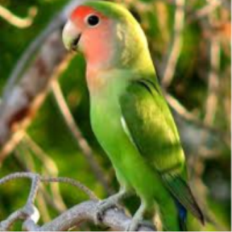
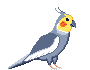

Hola, soy Javier Sánchez
Especialista en
Construyendo el futuro bit a bit con arquitecturas robustas.
Sobre Mí
Soy un apasionado de la resolución de problemas mediante código. Desde que comencé a programar en 1º de la ESO, he desarrollado una pasión por el código y la creación de soluciones tecnológicas. Mi enfoque siempre intenta combina la eficiencia técnica con una comunicación clara, buscando siempre optimizar procesos y escalar arquitecturas.
Habilidades Profesionales
Dominio de Lenguajes
Ecosistema & Herramientas
Proyectos Destacados
UPOCARGO
Desarrollo de un módulo de Odoo en Python.
Preduciendo el futuro
Simulación de predicción de temperatura con C, MPI y OpenMP.
Study+
Aplicación web para ayudar a los estudiantes.
Neural Network
Red neural implementada desde cero.
Mi Trayectoria
Sevilla, España
Durante mi formación académica, he consolidado una base técnica sólida centrada en la eficiencia algorítmica y la escalabilidad de sistemas:
- CI/CD: Automatización de despliegues mediante GitHub Actions.
- Bases de Datos: Diseño relacional y administración avanzada en Oracle DB.
- Arquitectura: Aplicación de patrones de diseño (SOLID, MVC) y arquitecturas limpias.
- HPC: Computación paralela y distribuida (MPI, OpenMP).
- Robótica: Desarrollo de algoritmos de navegación y control.
- Algoritmia: Resolución de problemas complejos y optimización de recursos.
Alcala de Guadaira, España
Durante mi etapa en el equipo de desarrollo, me especialicé en conectar procesos de negocio con soluciones tecnológicas. No solo optimicé la arquitectura de datos existente mediante el refinamiento de consultas SQL, sino que expandí las capacidades del equipo desarrollando aplicaciones en PowerApps. Además, diseñé e implementé un agente de IA sobre la infraestructura de Microsoft Copilot. Esta proactividad en la búsqueda de soluciones disruptivas fue reconocida con un premio a la innovación.
¿Tienes un desafío para mí?
